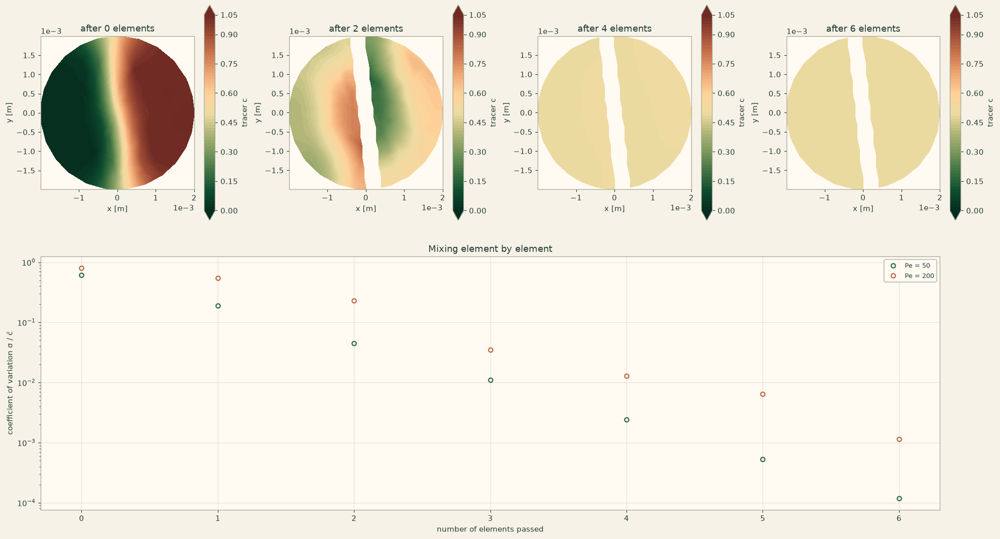
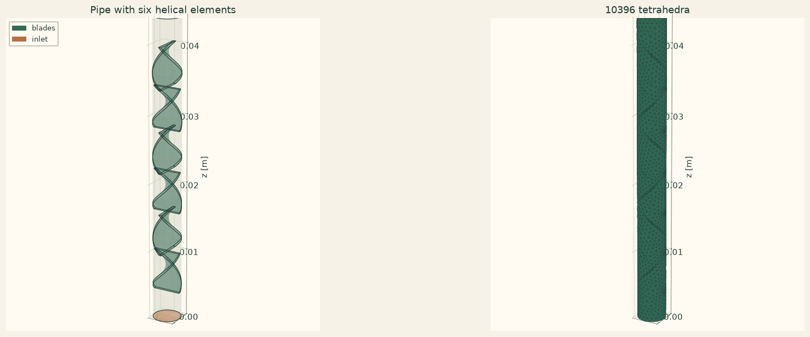

Docs › Examples › Helical static mixer: mixing element by element
Mixing · 3D
Helical static mixer: mixing element by element
Six alternating helical blades in a pipe mix two liquids in creeping flow, followed element by element at two Péclet numbers.

What it computes
The mixer is read from a STEP file and meshed with tetrahedra. OneSimulation solves the 3D creeping flow with Taylor-Hood elements and a tracer at Pe = 50 and Pe = 200 in the computed flow with quadratic elements, and evaluates the pressure drop and the coefficient of variation behind every element. The script that builds the STEP file comes with the notebook.
What it checks
The pressure drop of the elements is 6.8 times that of an empty pipe of the same length (published about 5 to 7); the coefficient of variation falls by a factor 0.23 (Pe = 50) and 0.29 (Pe = 200) per element, from 0.80 to 0.001 over six elements at Pe = 200; the tracer balance closes within 0.2 %.
Geometry
The notebook starts at the import of the CAD file helical_static_mixer_elements.step: STEP (AP242), readable by any CAD program, with the names of the faces that the boundary conditions use. Put it next to the notebook.

The geometry script
The script helical_static_mixer_elements_geometry.py builds the geometry with the CAD objects of OneSimulation and writes the file. Change a dimension there, run it, and run the notebook again.
"""Geometry of the OneSimulation example "Helical static mixer: mixing element by element".
Builds a pipe of diameter 4 mm with six helical mixing elements with the CAD objects of
OneSimulation: blades 0.4 mm thick and 6 mm long, each twisted by 180 degrees, alternately to the
right and to the left, every blade turned by 90 degrees against the previous one, with 4 mm of empty
pipe before and after them (44 mm in all). The fluid region is written to
helical_static_mixer_elements.step with the face groups inlet (z = 0) and outlet (z = 44 mm).
"""
import numpy as np
from onesim.cad.d2 import Profile
from onesim.cad.d3 import Cylinder
mm = 1e-3
radius, thickness, element, count = 2 * mm, 0.4 * mm, 6 * mm, 6
length = 8 * mm + count * element
blade = Profile.rectangle(
2.4 * radius, thickness, origin=(-1.2 * radius, -thickness / 2)
)
pipe = Cylinder(radius=radius, length=length)
for k in range(count):
pipe = pipe - blade.twisted(element, np.pi * (-1) ** k).rotated(
(0, 0, 1), k * np.pi / 2
).moved((0.0, 0.0, 4 * mm + k * element))
pipe = pipe.grouped(
inlet=pipe.select(faces=lambda face: abs(face.center[2]) < 1e-9),
outlet=pipe.select(faces=lambda face: abs(face.center[2] - length) < 1e-9),
)
pipe.save("helical_static_mixer_elements.step")The notebook
The complete notebook, cell by cell. Run it to produce the figures and the comparison printout.
A helical static mixer is a row of short blades twisted by 180°, alternately right- and left-handed and each turned by 90° against the previous one. Each element divides every layer of the stream into two and restacks them, so after \(n\) elements the stream consists of about \(2^n\) layers, and the distance that diffusion must bridge halves with every element. How many elements a duty needs depends on the Péclet number \(Pe=\bar UD/\mathcal D\): the slower the diffusion, the more layers are needed before it completes the mixing.
The mixer comes from the CAD file helical_static_mixer_elements.step, written by helical_static_mixer_elements_geometry.py: a pipe of diameter \(D=4\) mm with six elements 6 mm long and 0.4 mm thick between 4 mm of empty pipe at each end. A liquid of the viscosity of water flows at \(\bar U=0.5\) mm/s (\(Re=2\)); half of the inflow carries a tracer, at \(Pe=50\) and \(Pe=200\).
| face | flow | tracer | |---|---|---| | inlet | Poiseuille profile, mean speed \(\bar U\) | \(c=\tfrac12\left(1+\tanh(x/0.2\,\text{mm})\right)\) | | outlet | traction free | no diffusive flux | | pipe wall and blades | no slip | no flux |
Reference. In the empty inlet section the pressure falls as in Hagen-Poiseuille flow, \(dp/dz=-8\mu\bar U/R^2\); the pressure drop of the elements relative to an empty pipe of the same length is of order 5 to 7 for this element type in creeping flow (A. Thakur, C. Vial, K. D. P. Nigam, E. B. Nauman, G. Djelveh, Chem. Eng. Res. Des. 81, 787-826, 2003); the tracer that enters must leave.
import numpy as np
from onesim.cad.d2 import Plane
from onesim.cad.exchange import load
from onesim.materials import IsotropicSolid, NewtonianFluid
from onesim.meshing import TetrahedralMesher
from onesim.numerics import Numerics
from onesim.numerics.fem import FiniteElement, GalerkinAdvection, Lagrange, TaylorHood
from onesim.numerics.linear import SparseDirect
from onesim.numerics.nonlinear import Newton
from onesim.physics.heat_transfer import (
ConvectiveHeatTransfer,
FixedTemperature,
HeatFlux,
)
from onesim.physics.hydrodynamics import (
FixedVelocity,
FlowTraction,
IncompressibleNavierStokes,
NoSlipWall,
fully_developed_inflow,
)
from onesim.results.derived import derived_field
from onesim.results.sampling import field_function
from onesim.simulation import Problem, Simulation
from onesim.visualization import plots, theme
theme.set()Geometry and mesh
mm = 1e-3
mixer = load("helical_static_mixer_elements.step")
faces = mixer.boundaries
walls = faces.all - faces.inlet - faces.outlet
radius, length = mixer.size[0] / 2, mixer.size[2]
mesh = TetrahedralMesher(target_size=0.6 * mm).generate(mixer)
view = plots.Camera(elevation=20, azimuth=-60)
fig = plots.figure(1, 2, size=(16, 5.5))
plots.geometry(
mixer,
selection={"blades": walls - faces.outer_wall, "inlet": faces.inlet},
labels=False,
camera=view,
title="Pipe with six helical elements",
ax=fig[0],
)
plots.mesh(
mesh,
groups=("all",),
legend=False,
camera=view,
title=f"{mesh.cell_count} tetrahedra",
ax=fig[1],
)
plots.show()Flow and tracer
The creeping flow first, then the tracer in it for both Péclet numbers.
water, speed = NewtonianFluid(density=1000.0, dynamic_viscosity=1.0e-3), 0.5e-3
flow = IncompressibleNavierStokes(domain=mixer.volume, material=water)
problem = Problem(
name="Helical mixer: flow",
geometry=mixer,
physics=(flow,),
boundary_conditions=(
FixedVelocity(
boundary=faces.inlet,
physics=flow,
value=fully_developed_inflow(
mesh, faces.inlet, mean_velocity=speed, no_slip=walls
),
),
FlowTraction(boundary=faces.outlet, physics=flow, value=(0.0, 0.0, 0.0)),
NoSlipWall(boundary=walls, physics=flow),
),
)
numerics = Numerics(
spatial=FiniteElement(element=TaylorHood()),
initial_guess={flow.velocity: (0.0, 0.0, 0.0)},
nonlinear_solver=Newton(
linear_solver=SparseDirect(), absolute_tolerance=1e-20, relative_tolerance=1e-9
),
)
solved = Simulation(problem=problem, mesh=mesh, numerics=numerics).solve_stationary()
velocity, pressure = solved.field(flow.velocity), solved.field(flow.pressure)
tracers = {}
for peclet in (50, 200):
tracer = IsotropicSolid(
density=1.0,
specific_heat_capacity=1.0,
thermal_conductivity=speed * 2 * radius / peclet,
youngs_modulus=1.0,
poisson_ratio=0.3,
thermal_expansion_coefficient=0.0,
)
transport = ConvectiveHeatTransfer(
domain=mixer.volume, material=tracer, velocity=field_function(velocity)
)
problem = Problem(
name="Helical mixer: tracer",
geometry=mixer,
physics=(transport,),
boundary_conditions=(
FixedTemperature(
physics=transport,
boundary=faces.inlet,
value=lambda x: 0.5 * (1 + np.tanh(x / (0.2 * mm))),
),
HeatFlux(physics=transport, boundary=faces.all - faces.inlet, value=0.0),
),
)
numerics = Numerics(
spatial=FiniteElement(
element=Lagrange(order=2), convection=GalerkinAdvection()
),
linear_solver=SparseDirect(),
)
tracers[peclet] = (
Simulation(problem=problem, mesh=mesh, numerics=numerics)
.solve_stationary()
.field(transport.temperature)
)Results
Pressures are averaged over cross-sections. The mixing quality is the flow-weighted coefficient of variation \(\sigma/\bar c\) at the end of each element, sampled at the points of the section that lie in the liquid at least 0.15 mm from a blade.
r, angle = np.meshgrid(
np.linspace(0.05, 0.95, 12) * radius, np.linspace(0, 2 * np.pi, 36, endpoint=False)
)
disc = np.column_stack(((r * np.cos(angle)).ravel(), (r * np.sin(angle)).ravel()))
weight = r.ravel()
section = lambda z: np.column_stack((disc, np.full(len(disc), z)))
margin = 0.15 * mm * np.array([[0, 0, 0], [1, 0, 0], [-1, 0, 0], [0, 1, 0], [0, -1, 0]])
ends = (3.8 + 6 * np.arange(7)) * mm
inside = [
np.all([mixer.contains(section(z) + shift) for shift in margin], axis=0)
for z in ends
]
variation = {}
for peclet, c in tracers.items():
w = [
velocity.evaluate(section(z)[keep])[:, 2] * weight[keep]
for z, keep in zip(ends, inside)
]
v = [np.ravel(c.evaluate(section(z)[keep])) for z, keep in zip(ends, inside)]
variation[peclet] = np.array(
[
np.sqrt(np.average((a - np.average(a, weights=b)) ** 2, weights=b))
/ np.average(a, weights=b)
for a, b in zip(v, w)
]
)
mean_pressure = lambda z: np.average(
np.ravel(pressure.evaluate(section(z))), weights=weight
)
poiseuille = 8 * water.dynamic_viscosity * speed / radius**2
elements = (
mean_pressure(3 * mm) - mean_pressure(length - 3 * mm) - poiseuille * 2 * mm
) / (poiseuille * 36 * mm)
flux = (
lambda c, face: derived_field(
velocity,
lambda u, points: np.ravel(c.evaluate(points)) * u[:, 2],
name="tracer_flux",
unit="1",
)
.integrate(boundary=face)
.value
)
print(
f"{mesh.cell_count} tetrahedra; inlet pressure gradient / Hagen-Poiseuille {(mean_pressure(1 * mm) - mean_pressure(3 * mm)) / (2 * mm) / poiseuille:.4f}"
)
print(
f"pressure drop of the six elements over an empty pipe of the same length: {elements:.2f} (published about 5 to 7)"
)
print(
"coefficient of variation at the end of element 0 1 2 3 4 5 6"
)
for peclet in tracers:
print(
f"Pe = {peclet:3d} {'':34s}"
+ " ".join(f"{value:6.3f}" for value in variation[peclet])
+ f" tracer balance {flux(tracers[peclet], faces.outlet) / flux(tracers[peclet], faces.inlet) - 1:+.1e}"
)
print(
"reduction per element (geometric mean of elements 2 to 6): "
+ ", ".join(
f"Pe = {peclet}: {(variation[peclet][6] / variation[peclet][1]) ** 0.2:.3f}"
for peclet in tracers
)
)Figure
The tracer at the end of every second element at \(Pe=200\), and the coefficient of variation element by element.
fig = plots.figure(
layout=[["e0", "e2", "e4", "e6"], ["mixing", "mixing", "mixing", "mixing"]],
size=(18, 10),
)
for panel, index in (("e0", 0), ("e2", 2), ("e4", 4), ("e6", 6)):
plots.section(
tracers[200],
plane=Plane(origin=(0, 0, ends[index]), normal=(0, 0, 1)),
aspect=1.0,
limits=(0.0, 1.0),
subdivisions=2,
label="tracer c",
title=f"after {index} elements",
ax=fig[panel],
)
plots.line(
points={
f"Pe = {peclet}": (list(range(7)), variation[peclet]) for peclet in tracers
},
scale="logy",
markers=True,
xlabel="number of elements passed",
ylabel="coefficient of variation σ / c̄",
title="Mixing element by element",
ax=fig["mixing"],
)
plots.show()Going further
Change the twist of the blades or their length in helical_static_mixer_elements_geometry.py and write the STEP file again: shorter, more strongly twisted blades mix more per element at a higher pressure drop. The coefficient of variation needed by a process then fixes the number of elements.